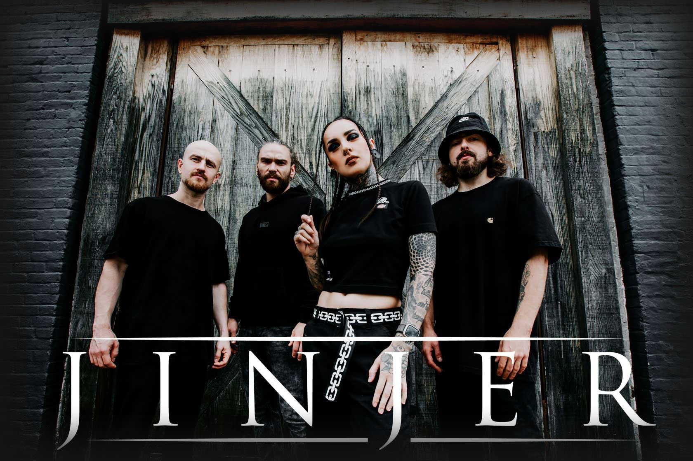
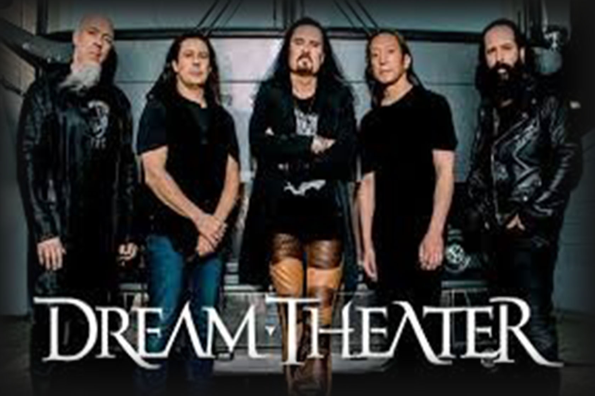

Bandas
Jinjer

jinjer é uma banda ucraniana de metal progressivo formada em 2009. O seu estilo músical incorpora elementos do death metal, metalcore e nu-metal. Ao explicar suas influências, a banda tem relacionado seu som ao de outras bandas de metal como Opeth, Karnivool e Textures, além de grupos de outros gêneros como R&B, soul e hip-hop. Um exemplo citado pela banda é o Cypress Hill.
Dream Teather

Dream Theater é uma banda de metal progressivo oriunda dos Estados Unidos e formada em meados dos anos 1980. Tornaram-se numa das bandas do movimento progressivo, desde o auge do rock progressivo em meados dos anos 1970.